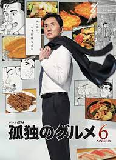

The solitary gourmet
- Pag 1 Presentazione
- Pag 2 Lista di cibo
Autore:Masayuki Qusumi

Masayuki Qusumi
Nato nel 15 luglio 1958 a Giappone,autore della manga the solitary goumet,questo manga parla di una persona di nome Gorō Inogashira un mercante di Mobili che vaggia tutto il mondo per dialogare con i clienti duranti questi viaggi mangera cibi diversi.
Protagonista:Gorō Inogashira

Yutaka Matsushige
Yutaka Matsushige attore della protagonista di the solitary gourmet Nato nel 19 gennaio 1963 a Giappone